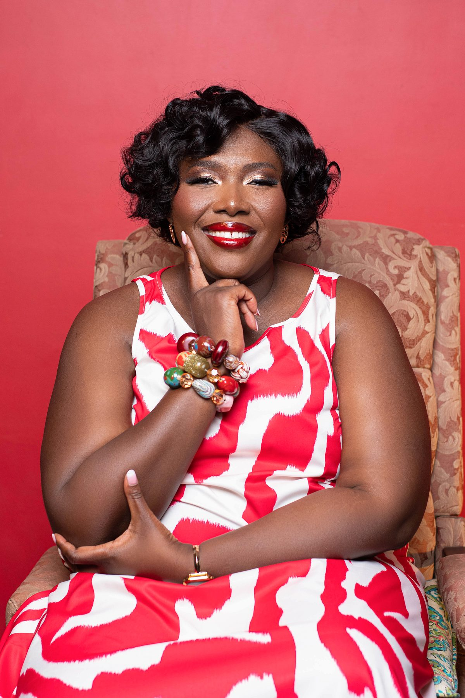

Operator by instinct
Francisca is strongest where strategy has to become ownership, rhythm, process and delivery.
Francisca Boateng is CEO of InnoSlamm and Director of Operations at Slamm Technologies across the United States and Ghana. She is a governance and operations leader, keynote speaker, executive coach and ISC2 Inclusion Impact Award winner.

Francisca’s career has moved through business operations, technology, governance, philanthropy, literacy, speaking and executive coaching. The thread is consistent: organize the work, create access and help people move with more confidence.
That range matters. It means her leadership perspective is not theoretical. It comes from teams, decisions, budgets, deadlines, community programmes, family life and the long work of becoming visible in rooms where you were once known only by association.
Work with FranciscaFrancisca is strongest where strategy has to become ownership, rhythm, process and delivery.
Her approach combines structure with the human realities that shape how people actually work.
Her impact work focuses on practical access to technology, literacy, mentorship and leadership.